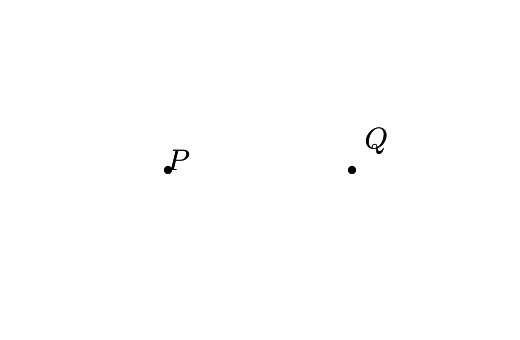
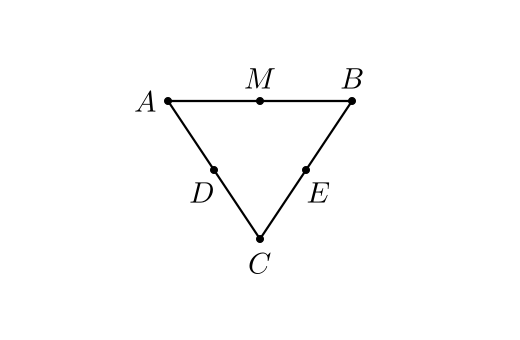

§6 · Подписи и автораскладка
Подпись в AnimaGeo — отдельный TeX-объект, не часть элемента. Позиция задаётся парой: 9-точечный якорь + pixel-offset. Для сложных сцен работает автоматическая раскладка: жадный решатель минимизирует перекрытия, углы размещаются аналитически по биссектрисе.
Базовое управление
Ключ elem.style | Тип | Default | Эффект |
|---|---|---|---|
label_visible | bool | зависит от типа | Отрисовать подпись рядом с элементом. |
label_text | строка | "$name$" | Текст (TeX или Unicode). |
label_mode | label / value / label_value | label | Показывать текст подписи, значение или label = value. |
label_value_precision | int | rendering.label_value_precision / 1 | Округление численной части. |
label_angle_unit | degree / radian | degree | Единицы для значений углов. |
label_color | hex | style.strong | Цвет подписи. |
label_anchor | TL..BR | rendering.label_anchor / BL | Какая точка bbox «прибивается» к якорной позиции. |
label_offset_px | [dx, dy] px | [0, 0] | Доп. сдвиг после якоря. Положительный y — вверх. |
font_size_px | float | defaults.<type>.font_size_px | Per-element размер шрифта в пикселях. |
label_placement_locked | bool | false | Защита от автораскладки — ручной label_offset_px остаётся. |
9-точечный якорь

BL— GeoGebra-default. Подпись справа-сверху от точки (базовая линия заглавных лежит на y).MC— центр bbox. Используется для подписей углов и дляcanonicalize_anchor=true-режима автораскладки.TC/BC— подпись сверху/снизу от точки.ML/MR— слева/справа от точки.
Как смотрится каждый якорь


rendering.label_anchor в JSON-стиле.
Per-element elem.style['label_anchor'] его перекрывает.
Offset — сдвиг подписи
offset=[dx, dy] — в пикселях, после якорения. По
конвенции математических координат: положительный y направлен
вверх. При смене px_size offset остаётся pixel-invariant
(делится на ptUnit_ggb, зафиксированный на момент импорта).
P = Point(-2, 0)
Q = Point(2, 0)
style(P, Q, label_visible=True)
P.style.label_offset_px = [0, 0]
Q.style.label_offset_px = [14, 16]
TeX и Unicode
Подписи компилируются через pdfLaTeX с шаблоном RusTex
(T2A + babel russian + utf8). В ui.py есть кастомная обработка
дробей, уменьшенные \angle и \triangle, и словарь
автозамен Unicode → TeX.
| Запись | Что компилирует | Результат |
|---|---|---|
'$A_1$' | raw-TeX | A₁ (с индексом) |
r'$\alpha + \beta$' | raw-TeX | α + β |
r'$\frac{a}{b}$' | raw-TeX | дробь a/b |
r'$\triangle ABC$' | raw-TeX | △ABC |
r'$x \in \mathbb{R}$' | raw-TeX | x ∈ ℝ |
'α + β = γ' | Unicode-autoreplace → TeX | α + β = γ |

Автозамена Unicode
В ui.py::correctedLabel() прописан словарь из 96 замен:
· → \cdot α → \alpha △ → \triangle
× → \times β → \beta ∠ → \angle
∈ → \in π → \pi ± → \pm
⇔ → \Leftrightarrow ∞ → \infty
...
Следствие: можно писать label = 'α + β = γ' обычным Unicode — TeX
получит корректное $\alpha + \beta = \gamma$. Удобно, если источник
подписей — таблица, CSV или GGB-файл с Unicode-текстом.
Автораскладка
Когда подписей много, они начинают перекрывать друг друга и сами
элементы. AnimaGeo решает это автоматически: вызовите
scene.autoPlaceLabels() перед exportSVG.
Алгоритм — жадный решатель с приоритетом:
- Для каждой подписи генерируется 8 кандидатов (E, NE, N, NW, W, SW, S, SE) на базовом расстоянии
distance_px. - Каждому кандидату назначается штраф: за направление относительно «идеального», за пересечение с другими подписями, за пересечение с геометрией.
- Подписи сортируются по «сложности» (мало свободных позиций → первыми) и размещаются жадно.
- Если все 8 кандидатов имеют штраф — радиус ступенчато увеличивается (до
+10 px) пока не найдётся чистая позиция.
Для углов — аналитика вместо 8 вариантов: подпись садится на
биссектрису, отодвигается на arc_r + half_label_size + gap_arc_px.
До и после


autoPlaceLabels()A = Point(-2, 1.5)
B = Point(2, 1.5)
C = Point(0, -1.5)
s1 = Segment(A, C)
s2 = Segment(B, C)
s3 = Segment(A, B)
M = Midpoint(A, B)
D = Midpoint(A, C)
E = Midpoint(B, C)
style(A, B, C, D, E, M, label_visible=True)
Углы: два независимых зазора
Подпись угла садится на биссектрисе снаружи дуги. Две независимые величины определяют, насколько далеко:
angle_gap_arc_px— расстояние от внешней дуги до ближайшей стороны bbox подписи. Базово:dist = arc_r + max(hw, hh) + gap_arc_px.angle_gap_sides_px— зазор от сторон угла до bbox (narrow-angle clamp). Для острых углов bbox «зажимается в воронку»; clamp отодвигает подпись дальше по биссектрисе:dist ≥ (half_diag + gap_sides_px) / sin(half_angle).
arc_r — это эффективный внешний радиус: для одной дуги
равен arc_size_px; при lines ≥ 2 —
arc_size_px + (lines − 1) × ang_rshift. Подпись автоматически уходит
за самую внешнюю дугу, не налезая.
Ручная блокировка
scene.element('A').style['label_placement_locked'] = True
scene.element('A').style['label_offset_px'] = [10, -5]
# autoPlaceLabels обойдёт A стороной; ручной offset останется.Конфигурация автораскладки
Все параметры — в overlay.label_placement в JSON-стиле:
| Параметр | Default | Описание |
|---|---|---|
enabled | false | Вызвать autoPlaceLabels() автоматически в конце loadGGB. |
distance_px | 6 | Базовое расстояние якорь → центр подписи, пикселей. |
padding_px | 2 | Зазор вокруг bbox для overlap-тестов. |
angle_gap_arc_px | 3 | Зазор дуга угла → подпись, пикселей. |
angle_gap_sides_px | 3 | Зазор стороны угла → bbox (narrow-angle clamp). |
angle_gap_px | 3 | Legacy: fallback, если два параметра выше не заданы. |
w_anchor | 1.0 | Штраф за отклонение от «идеального» направления. |
w_label | 10.0 | Штраф за пересечение с другими подписями. |
w_geom | 8.0 | Штраф за пересечение с геометрией. |
dynamic_angles | false | Пересчитывать биссектрисы каждый кадр (нужен anim-режим, см. ниже). |
keyframe_snapshots | false | Для play_keyframes: snapshot на каждом keyframe + интерполяция. |
canonicalize_anchor | false | Всё в MC — убирает дискретные скачки якоря между кадрами. |
interpolation | linear | Easing offset между snapshot-ами: linear / smooth. |
ema_alpha | 0.2 | Вес свежего решения в EMA (dynamic tracker). |
anchor_flip_frames | 6 | Минимум кадров перед сменой якоря (hysteresis). |
solver_every_n_frames | 2 | Throttle решателя в tracker-режиме. |
dynamic_angles=true сам по себе ничего не делает.
Ему нужен один из активных режимов: keyframe_snapshots=true (для
play_keyframes) или autoPlaceLabels(dynamic=True)
(для addUpdater-анимаций). Это сделано сознательно: стоимость
per-frame-вычислений должна быть явной.
Подписи в анимации
Три режима работы в анимации:
| Режим | Когда | Что делает |
|---|---|---|
| Статика | scene.autoPlaceLabels() | One-shot: решатель запускается один раз, результат замораживается. |
| Keyframe-snapshot | overlay.label_placement.keyframe_snapshots=true | Pre-pass на каждом keyframe (со сохранением/восстановлением состояния), offset между snapshot-ами интерполируется. |
| Per-frame tracker | autoPlaceLabels(dynamic=True) | Ставит LabelTracker в сцену: каждый кадр решатель перезапускается, результат сглаживается через EMA, якоря меняются только после N стабильных кадров (hysteresis). |
Рекомендуемая конфигурация для keyframes
"rendering": {
"label_placement": {
"enabled": true,
"keyframe_snapshots": true,
"dynamic_angles": true,
"canonicalize_anchor": true,
"interpolation": "smooth"
}
}Что получается: на каждом keyframe solver находит лучшую раскладку,
все подписи приводятся к якорю MC (исключает скачки между
кадрами), offset-ы плавно интерполируются smoothstep-ом, биссектрисы
углов обновляются аналитически каждый кадр.
Живые примеры — в §8 (Анимации).